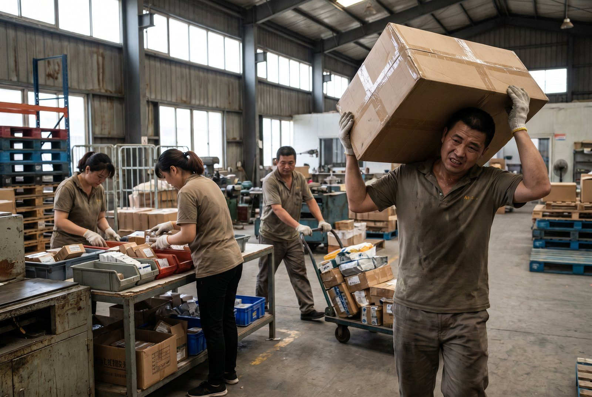

Din langsomste plukker er måske din hurtigste medarbejder i et ordentligt system.
Du måler output, ikke betingelserne. Og systemet rundt om dem koster dig 40.000-120.000 kr. årligt per medarbejder i spildt tid.
Når "langsom" er et symptom, ikke årsagen
En plukker bruger 8 minutter på at finde en vare. Du tænker: for langsom. Men hvad sker der egentlig?
- 0:00-2:00: Går til A4-07. Varen er ikke der.
- 2:00-5:00: Leder i nærlokationer. Spørger kollega (som også stopper sit arbejde).
- 5:00-7:00: Finder varen på B2-11. Nogen har sat den forkert for 3 dage siden.
- 7:00-8:00: Går tilbage til pakkestation.
Medarbejderen er ikke langsom. Medarbejderen løser et systemproblem. Og det gentager sig 4-6 gange om dagen per plukker.
👉 Kender du det mønster? Se hvordan SmartPack løser det
Tre konkrete eksempler på system-fejl der ser ud som person-fejl
Ingen klare lokationer = medarbejderen søger
Hvis lageret ikke har tydelig lokationsstruktur (gang, reol, niveau, position), gætter medarbejderne. De husker fra sidst. De spørger hinanden. Det er ikke dovenskab. Det er overlevelse i et dårligt system.
8 minutter søgetid/dag per medarbejder = 33 timer årligt. Med 4 ansatte = 132 timer. Ved 350 kr./time (inkl. overhead) = 46.200 kr. årligt. Løses med klare lokationsskilte og et WMS der viser præcis hvor varen er.
Ingen standardprocedure = medarbejderen gætter
Varen er ikke på lokationen. Hvad gør medarbejderen? Leder i 5 minutter? Markerer "ikke fundet"? Spørger chefen?
Ordren siger 10 stk., der er kun 7. Plukker medarbejderen 7 og skriver intet? Eller stopper ordren og rapporterer afvigelsen?
Hvis der ikke er klare procedurer, beslutter hver medarbejder selv. Det fører til: fejl, inkonsistens, manglende data. En ny medarbejder lærer forkerte vaner de første 2 uger. Et halvt år senere er de væk. Næste medarbejder lærer af dem. Systemet reproducerer sine egne fejl.
Travlt pakkebord = kø og fejl
Plukkere leverer 25 ordrer/time. Pakkere klarer 18/time. Der opstår kø. Plukkere venter (spildt tid). Eller de fortsætter og blander varer fra flere ordrer. Resultat: forkert indhold, reklamationer, ekstra arbejde.
Det er ikke pakkerens fejl. Det er et flow-problem. Kapaciteten mellem pluk og pak er ikke afstemt. Der er ingen buffer-mekanisme.
15-minutters testen: kan en ny medarbejder klare opgaven?
Send en ny medarbejder ud på lageret dag 1 uden oplæring. Giv dem en plukliste. Se hvad der sker.
Hvis de kan finde varer, forstå lokationssystemet og følge en plukrute inden for 15 minutter: systemet er godt. Hvis de står forvirrede efter 30 minutter: problemet er systemet, ikke personen.
SmartPack er bygget efter det princip: 15 minutter fra start til selvstændig pluk. Ikke fordi det lyder godt. Men fordi hvis systemet kræver 2 ugers oplæring, er det for komplekst til at køre stabilt.
Hvornår er det faktisk personen?
Det sker. Men det er sjældnere end du tror. Og det er nemmere at se i et godt system.
Alle andre plukkere klarer 120 pluk/time. Én person klarer 60. Er det personen? Måske. Men først: Bruger de samme rute? Samme varer? Er de nye? Arbejder de i en anden del af lageret?
Et godt system giver dig data til at skelne. Et dårligt system giver dig mavefornemmelse og frustration.
Hvad koster systemfejl i kroner?
8 minutter søgetid/dag per medarbejder × 250 arbejdsdage = 2.000 minutter = 33 timer årligt.
4 medarbejdere = 132 timer årligt i ren søgetid. Ved 350 kr./time (inkl. overhead, ferie, sygdom) = 46.200 kr. om året.
Det er kun søgetiden. Læg dertil: fejlplukning (varen var der alligevel, men forkert registreret), returbehandling af forkert leverede ordrer, kundeservice på reklamationer. Det samlede tab er typisk 2-3x = 92.000-138.000 kr. årligt.
Hvad SmartPack gør ved det
SmartPack sender plukkeren til præcis lokation med scanner-vejledning. Varen er ikke der? Scan lokation, meld afvigelse. Systemet registrerer det automatisk. Ingen gætteri.
Plukvejledningen i terminalen viser næste lokation, antal og varekode. Nye medarbejdere følger vejledningen uden hjælp. Fejlrate falder fra dag 1, fordi systemet ikke længere er afhængigt af at medarbejderen husker rigtigt.
Du måler stadig output. Men nu ved du om lav output skyldes personen eller systemet.